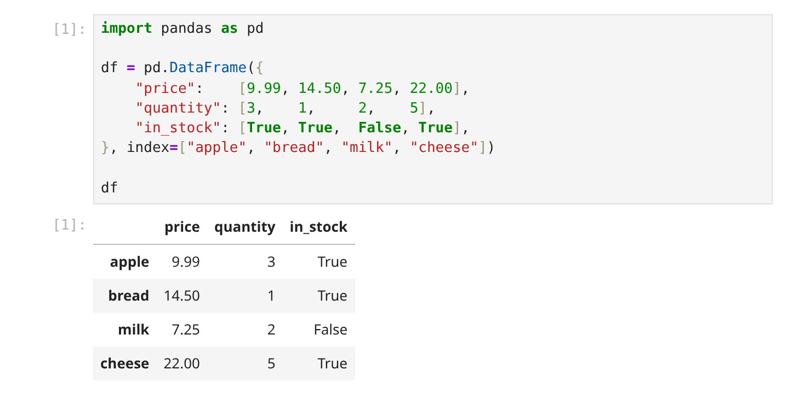

22 pandas Basics
Prerequisites (read first if unfamiliar): Chapter 17, Chapter 20, Chapter 21.
See also: Chapter 16, Chapter 23, Chapter 7.
Purpose
Your instructor’s notebook ran perfectly in class. You copy a cell into your own project, point it at your own file, and pandas answers with a wall of red text. Or worse, with nothing at all: you set some values, print the table, and it hasn’t changed.
That doesn’t mean you’re bad at this. pandas is how Python loads a table of data, pokes at it, reshapes it, and summarizes it. It’s usable on the first day, which is why so many people use it for months without a picture of what’s going on underneath. With that picture, most of its error messages stop being mysterious.
This chapter gives you the picture: what a Series and a DataFrame are, how selecting rows and columns works, how the everyday operations fit together, and the traps that catch nearly every beginner, with the messages pandas 3 actually prints. It skips most of pandas’ hundreds of methods (Chapter 5 shows how to look them up) and leaves cleaning and checking data to Chapter 21. If you know SQL, think of pandas as SQL against a table in memory (Chapter 23).
Why read this chapter
- You’ve been copying pandas cells from an instructor’s notebook, and they work, but you couldn’t explain what
df.loc[df["price"] > 10, "in_stock"]actually says. - You changed some values in a filtered table, pandas printed
ChainedAssignmentError, and your DataFrame came out exactly the way it went in. - You wrote
df = df.dropna(inplace=True), and the next line failed withAttributeError: 'NoneType' object has no attribute 'head'. - You joined two conditions with
andand gotValueError: The truth value of a Series is ambiguous, which doesn’t say what to write instead. - You sorted a table, asked for row
0, and got a row that’s plainly not the first one. - Your notebook loops over every row of a big table, and you go make coffee every time you run it.
- You ran a random train/test split twice, got two different answers, and don’t know which one to report.
Running theme: pandas rewards vectorized thinking, and punishes loops
Almost everything you do in pandas is a verb applied to a whole set at once: filter these rows, add this column to every row, group by this and take the mean. When you catch yourself writing for row in df.itertuples(), stop and look for the whole-column version; it’ll be shorter, faster, and easier to read.
22.1 The two data structures
Everything in pandas is built on two structures, and many confusing error messages make sense once you know which one you’re holding. (For a quick tour alongside this chapter, try pandas’ own 10 minutes to pandas.)
Series: a labeled column
A Series is like a Python list in which every value has a label. Think of it as one column of a spreadsheet, with the row names attached:
import pandas as pd
prices = pd.Series(
[9.99, 14.50, 7.25, 22.00],
index=["apple", "bread", "milk", "cheese"],
name="price",
)
print(prices)
# apple 9.99
# bread 14.50
# milk 7.25
# cheese 22.00
# Name: price, dtype: float64You get a value by its label: prices["bread"] gives 14.5. And arithmetic works on the whole Series at once: prices * 1.1 marks every price up 10% and returns a new Series, with no loop in sight. Writing one operation that applies to every element is called array programming, or vectorization, and this chapter keeps coming back to it.
DataFrame: a labeled table
A DataFrame is a table: a set of Series that share one set of row labels, the index. The idea came to Python from R, which is why you’ll hear about data frames in general, not just pandas ones.
df = pd.DataFrame({
"price": [9.99, 14.50, 7.25, 22.00],
"quantity": [3, 1, 2, 5],
"in_stock": [True, True, False, True],
}, index=["apple", "bread", "milk", "cheese"])
print(df)
# price quantity in_stock
# apple 9.99 3 True
# bread 14.50 1 True
# milk 7.25 2 False
# cheese 22.00 5 TrueIn a notebook, the same DataFrame is drawn as a table instead of printed as text (Figure 22.1).

Here’s where newcomers most often get lost: the index is not a column. It’s the row labels, so df.columns doesn’t list it. It travels with each row through filtering and sorting, which is what makes it useful, and what makes .loc and .iloc disagree once you’ve sorted (see the traps below). df.reset_index() turns the labels into an ordinary column and gives a fresh 0, 1, 2, … index; df.set_index("column_name") promotes a column to be the index. The guide to pandas’ data structures goes deeper.
22.2 Creating a DataFrame
Most DataFrames arrive from a file, and the IO tools guide lists a reader for nearly every format (Chapter 20 covers their quirks):
df = pd.read_csv("sales.csv")
df = pd.read_parquet("sales.parquet")
df = pd.read_excel("report.xlsx", sheet_name="Q4")The Excel line catches almost everyone once: pandas needs a separate package, openpyxl, to read .xlsx, so the first try stops with ImportError: `Import openpyxl` failed. Your file is fine. Install openpyxl into the environment your notebook uses (see Chapter 14) and rerun the cell.
To build a small table by hand, to test an idea or share a problem others can run, use a dict of columns (easiest to type), a list of dicts, one per row (the shape a JSON web API usually hands you, as Chapter 24 shows; any missing key becomes NaN), or a list of lists plus the column names:
df = pd.DataFrame({"name": ["Alice", "Bob", "Carol"], "age": [30, 25, 35]})
df = pd.DataFrame([
{"name": "Alice", "age": 30},
{"name": "Bob", "age": 25},
{"name": "Carol", "age": 35},
])
df = pd.DataFrame([["Alice", 30], ["Bob", 25]], columns=["name", "age"])22.3 Inspecting a new DataFrame
The first thing to do with any new DataFrame is look at it, before you’ve formed opinions about what’s in it:
df.shape # (rows, columns): is it the size you expected?
df.columns # column names
df.dtypes # the type pandas guessed for each column: any surprises?
df.head() # first 5 rows
df.tail() # last 5 rows
df.info() # row count, non-missing counts, types, memory
df.describe() # summary statistics for the numeric columns(A notebook cell displays only its last value, so run these one per cell or wrap them in print().)
Each line answers a question you’d otherwise answer the hard way, hours later. dtypes is where surprises hide: text shows up as str in pandas 3 (object in pandas 2), so a price column listed as str has something in it that isn’t a number. tail() is where a stray “Total” row lurks, and describe() makes an age of 999 jump out. It takes a minute and heads off a surprising share of “why is my analysis wrong?” bugs; Chapter 21 turns it into checks that run every time.
22.4 Selecting columns and rows
Selection is where pandas code looks most like line noise: single brackets, double brackets, .loc, .iloc, and comparisons inside brackets inside brackets. There’s a logic to it, though, and the indexing guide has the full story.
Columns
One column name gives you a Series; a list of names gives you a DataFrame:
df["price"] # a Series
df[["price", "quantity"]] # a DataFrameThe double brackets aren’t a typo: the outer pair selects, and the inner pair is an ordinary Python list. Leave it out, as in df["price", "quantity"], and pandas looks for one column named ("price", "quantity") and says KeyError: ('price', 'quantity').
You’ll also see df.price. It’s fine for a quick look, but it fails for names with spaces, loses to a method of the same name (a column called count gives you df.count), and can’t create a column. In code you keep, use brackets.
Rows: .loc and .iloc
For rows there are two tools. .loc selects by label (the index); .iloc selects by integer position, counting from zero like the rest of Python (zero-based numbering). Both take a row, a range, or a list, plus an optional second argument for columns:
df.loc["bread"] # the row labeled "bread"
df.iloc[1] # the second row, whatever its label
df.loc["apple":"milk"] # label range: includes BOTH ends (3 rows)
df.iloc[0:3] # position range: stops before 3 (3 rows)
df.loc[["apple", "cheese"]] # a list of labels
df.iloc[[0, 3]] # a list of positions
df.loc["apple", "price"] # one cell, by label: 9.99
df.loc["apple":"milk", "price"] # three rows of one column: a Series
df.loc[:, ["price", "quantity"]] # every row, two columns
df.iloc[0, 1] # one cell, by position: 3Notice the ranges: “from apple to milk” includes milk, while a position range stops just before its end, like any Python slice. The rule of thumb is to use .loc almost always, because your index usually means something and labels stay attached to their rows through sorting and filtering. Use .iloc when you really mean a position, like “the first ten rows.”
Boolean masks
The selection you’ll use most answers “which rows meet this condition?” A comparison on a column gives a Series of True and False, one per row, called a boolean mask (after bit masks). Inside brackets, it keeps the True rows:
df[df["price"] > 10] # rows where price is over 10
df[(df["price"] > 10) & (df["in_stock"])] # both conditions (note the parentheses)
df[df["quantity"].isin([1, 2])] # value is in a listConditions combine with & (and), | (or), and ~ (not), never Python’s and, or, and not, and each gets its own parentheses; the traps below show why. The guide’s boolean indexing section has more kinds of mask.
When you search free text that has gaps, add na=False, as in orders["note"].str.contains("refund", na=False). pandas 3 already counts a missing note as “no match,” but pandas 2 stopped with ValueError: Cannot mask with non-boolean array containing NA / NaN values. The guide to working with text covers the other .str methods.
22.5 Adding, modifying, and dropping columns
Once you can select, changing a table is mostly assignment:
df["revenue"] = df["price"] * df["quantity"] # new column from arithmetic
df["price"] = df["price"] * 1.1 # overwrite a column
df["price_band"] = pd.cut(df["price"], bins=[0, 10, 20, 100]) # numbers into ranges
df = df.drop(columns=["price_band"]) # drop a column
df = df.rename(columns={"price": "unit_price"}) # renameLook at which lines say df = .... Setting df["col"] changes df directly, but drop and rename return a changed copy, lost unless you assign it; two traps below grow from that difference. (pd.cut sorts numbers into ranges like (10, 20].)
To build several columns in one expression without touching df, use assign. Each lambda d: gets the table as it stands at that step, so the second assign can use the first one’s column:
(df
.assign(revenue=lambda d: d["price"] * d["quantity"])
.assign(big_order=lambda d: d["revenue"] > 50)
)22.6 The classic novice traps
Every pandas user falls into these, usually more than once: each is pandas doing exactly what you told it, when that isn’t quite what you meant. The output below is from pandas 3.0 (released in January 2026), which changed several of them. Most tutorials, forum answers, and AI assistants learned their pandas from version 2, so if what you see doesn’t match, check pd.__version__ and the notes on version 2.
Chained assignment
You want to mark everything over $10 as out of stock, so you write it the way you’d say it:
df[df["price"] > 10]["in_stock"] = Falsepandas 3 answers with this (trimmed, and wrapped to fit):
ChainedAssignmentError: A value is being set on a copy of a DataFrame or Series
through chained assignment.
Such chained assignment never works to update the original DataFrame or Series,
because the intermediate object on which we are setting values always behaves
as a copy (due to Copy-on-Write).Print df, and bread and cheese are still True. Despite “Error” in its name, this is a warning: the cell keeps running, which makes it easy to miss.
That line is two steps chained together: df[df["price"] > 10] builds a new, smaller table, and ["in_stock"] = False changes that table, which is then thrown away. Under pandas 3’s Copy-on-Write rules (named after a general programming technique), every selection behaves as its own copy, so an assignment chained onto one never reaches the original. Do it in one step with .loc, which takes the rows and the column together, and bread and cheese both become False:
df.loc[df["price"] > 10, "in_stock"] = FalseThe flip side is good news: when you take a subset on purpose (expensive = df[df["price"] > 10], then expensive["quantity"] = 0), pandas 3 changes expensive, leaves df alone, and doesn’t warn.
pandas 2 warned about both cases with SettingWithCopyWarning: A value is trying to be set on a copy of a slice from a DataFrame, even the harmless one, which is why older code is full of .copy() calls added just to quiet it; pandas 3 removed that warning. And the column-first form, df["in_stock"][mask] = False, did change df in pandas 2, so code written that way silently stops working in pandas 3. The .loc version works in both.
inplace=True, and methods that return a copy
You sort your table, print it, and it’s in the original order. Nothing is broken: sort_values returns a sorted copy, as do drop, rename, dropna, reset_index, and most other methods, so keep it with df = df.sort_values("price"). Many of them also take inplace=True, which changes df directly and usually returns None. So this line cleans the table and then replaces it with nothing:
df = df.dropna(inplace=True)
df.head()
# AttributeError: 'NoneType' object has no attribute 'head'If you see 'NoneType' object has no attribute right after a pandas method, look for an inplace=True with an assignment in front of it (Chapter 5 shows how the signature warns you). pandas 3 made this less predictable: a few methods, including fillna, replace, and clip, now return the DataFrame even with inplace=True, while sort_values, dropna, drop, rename, and most others still return None. Rather than memorizing which is which, skip inplace and assign the result back.
and where you meant &
You want rows that are over $10 and in stock:
df[(df["price"] > 10) and (df["in_stock"])]
# ValueError: The truth value of a Series is ambiguous. Use a.empty, a.bool(),
# a.item(), a.any() or a.all().Python’s and, or, not, and if each need a single True or False. A comparison on a column gives one per row, and pandas won’t guess whether you mean “are any true?” or “are all true?” You meant “combine these row by row,” which is what & does: df[(df["price"] > 10) & (df["in_stock"])] returns bread and cheese. The same error comes from if df["price"] > 10:, where the fix is to ask what you mean, with .any() or .all().
The parentheses matter just as much. & binds more tightly than > (see Python’s operator precedence table), so df[df["price"] > 10 & df["in_stock"]] means df["price"] > (10 & df["in_stock"]). Since 10 & True is 0 (the bits are combined one by one), that asks for prices over 0, and you get all four rows back with no error and no warning. Parenthesize every condition, every time.
is where you meant ==
== asks “are these values equal?” is asks “are these the very same object in memory?” (an identity comparison), which is almost never what you mean with data:
df[df["price"] is 22.0]
# SyntaxWarning: "is" with a literal. Did you mean "=="?
# KeyError: FalseThe column isn’t the same object as the number, so is gives one False, and pandas looks for a column named False. Python’s warning has it right: df[df["price"] == 22.0] returns the cheese row.
Missing values fool == too, because NaN is designed not to equal anything, itself included. On s = pd.Series([9.99, np.nan, 7.25]), s == np.nan is False for all three rows, even the missing one, while s.isna() finds it. Use .isna() (or .notna()) to find missing values, always.
.loc where you meant .iloc
A table read from a CSV gets a default index of 0, 1, 2, …, so labels match positions and .loc and .iloc agree. That’s why mixing them up goes unnoticed, until you sort:
scores = pd.DataFrame({"student": ["Ana", "Ben", "Chen", "Dev"],
"score": [88, 72, 95, 64]})
ranked = scores.sort_values("score", ascending=False)
print(ranked)
# student score
# 2 Chen 95
# 0 Ana 88
# 1 Ben 72
# 3 Dev 64You want the top scorer, so you ask for row 0. ranked.loc[0] gives Ana, whose label is still 0; ranked.iloc[0] gives Chen, first by position. Ranges get stranger: ranked.iloc[0:2] gives Chen and Ana, but ranked.loc[0:2] gives an empty table, because label 2 now comes before label 0. Say which you mean.
(A pandas 2 note: plain brackets with a number on a text index, like prices[0], used to fall back to position with a FutureWarning. In pandas 3 that raises KeyError: 0; write prices.iloc[0].)
Looping over rows
If you learned to program with lists, a loop feels like the natural way to change every row:
for i, row in df.iterrows():
df.loc[i, "adjusted"] = row["price"] * 1.1 # slow, and easy to get wrong
df["adjusted"] = df["price"] * 1.1 # the same result, vectorizedOn the computer this chapter was tested on (pandas 3.0, September 2026), the loop took about 15 seconds for 100,000 rows, and the one-liner under 2 milliseconds. Your timings will differ; the gap won’t. The loop runs Python code once per row, while the one-liner hands the whole column to NumPy, the library underneath pandas, which does the arithmetic in compiled code. pandas’ own guide says iterating is generally slow, and that changing what you’re iterating over isn’t guaranteed to work at all.
So when you reach for iterrows or itertuples, ask how to say it for the whole column. .str and .dt work on whole columns of text and dates, and an if-else per row becomes np.where: np.where(df["price"] > 10, "premium", "standard"). When there’s truly no whole-column version, .apply is a middle ground (about 25 milliseconds in the same test). Chapter 16 shows how to find what’s actually slow.
22.7 Aggregation and group-by
Sooner or later every analysis asks something like “how much revenue did each category bring in?” That’s groupby, and a huge share of real questions are group-bys in disguise. It works in the three steps Hadley Wickham named split-apply-combine: split the rows into groups, apply a calculation to each, and combine the results. Take a small made-up table:
sales = pd.DataFrame({
"product": ["pens", "paper", "ink", "stapler", "tape", "folders", "labels", "clips"],
"category": ["writing", "paper", "writing", "desk", "desk", "paper", "paper", "desk"],
"region": ["west", "east", "west", "east", "west", "west", "east", "east"],
"price": [2.50, 8.00, 12.00, 15.00, 3.00, 6.50, 4.00, 1.50],
"quantity": [40, 25, 10, 4, 30, 12, 20, 50],
})
sales["revenue"] = sales["price"] * sales["quantity"]Read a group-by left to right: group by category, take revenue, sum it.
sales.groupby("category")["revenue"].sum()
# category
# desk 225.0
# paper 358.0
# writing 220.0
# Name: revenue, dtype: float64
sales.groupby("category")["revenue"].agg(["sum", "mean", "count"])
sales.groupby(["category", "region"])["revenue"].mean().unstack()The second line computes three summaries at once. The third groups by two columns and spreads the regions across the top; its writing-and-east cell is NaN, because nothing in that category sold in the east. The group by guide takes it from there.
For “the top two products in each category,” sort, then take the first rows of each group: sales.sort_values("revenue", ascending=False).groupby("category").head(2). Older answers online use .groupby("category").apply(lambda g: g.nlargest(2, "revenue")) instead. Be careful with those: in pandas 3, apply no longer passes the grouping column to your function, so the result quietly comes back without a category column (pandas 2 warned about the change).
22.8 Merging (joining) DataFrames
Orders are in one table and customers in another, and you want each order’s customer city beside it. That’s a merge, pandas’ version of a SQL join (see Chapter 23); the merging guide draws every kind:
merged = orders.merge(customers, on="customer_id", how="left", validate="many_to_one")onnames the column(s) to match on; useleft_on=andright_on=if the names differ.howsays which rows survive:"inner"(the default) keeps only rows that match on both sides;"left"or"right"keeps every row of that side;"outer"keeps everything.validatestates the relationship you expect:"one_to_one","one_to_many","many_to_one", or"many_to_many". Use it every time.
That last one matters most. If a customer was entered twice, a merge without validate quietly matches each of their orders twice, and every total grows; with it, pandas stops with MergeError: Merge keys are not unique in right dataset; not a many-to-one merge. Chapter 21 tells the full story of merges that multiply or drop rows.
22.9 Sorting
df.sort_values("price") # ascending by one column
df.sort_values("price", ascending=False) # descending
df.sort_values(["category", "price"]) # by category, then price within it
df.sort_index() # by the index labelsLike most methods, sort_values returns a sorted copy. Missing values go last in either direction. And text sorts by character code, so capitalized words come before lowercase ones ("Banana" before "apple"); pass key=lambda col: col.str.lower() to sort the way a person would.
22.10 Randomness you can repeat
Some analysis steps are random on purpose: drawing a sample to look at, splitting data into training and test sets, shuffling, or resampling for a bootstrap estimate. Run them twice and you get different answers:
df = pd.DataFrame({
"student": ["Ana", "Ben", "Chen", "Dev", "Eli", "Fay", "Gus", "Hana"],
"score": [88, 72, 95, 64, 79, 91, 70, 83],
})
df.sample(3)["student"].tolist() # ['Ben', 'Chen', 'Fay']
df.sample(3)["student"].tolist() # ['Eli', 'Dev', 'Ben']That’s correct behavior, and a problem for everyone who wants to check your work, including you next week: a result that changes on every run can’t be reproduced or debugged. Computers make “random” numbers with a pseudorandom number generator, a formula whose output looks random but is fixed by where it starts. So the fix is to control that starting point with a seed, a number that fixes the whole sequence of “random” draws that follows. df.sample(3, random_state=42) returns ['Ben', 'Fay', 'Ana'] every time.
One generator, passed along
For more than one random step, create a single random number generator from one seed, near the top of your notebook or script, with NumPy’s default_rng, and hand it to every step that needs randomness:
import numpy as np
SEED = 2026
rng = np.random.default_rng(SEED)
def split(df, rng):
test = df.sample(frac=0.25, random_state=rng)
return df.drop(test.index), test
def bootstrap_mean(scores, rng, n=1000):
means = [scores.sample(len(scores), replace=True, random_state=rng).mean() for _ in range(n)]
return np.mean(means)
train, test = split(df, rng)
estimate = bootstrap_mean(train["score"], rng)Run that from the top, and the test set is Ben and Fay and the estimate is 79.85, every time. pandas’ random_state accepts a generator like rng. Other libraries have their own way to take a seed (scikit-learn’s functions have a random_state argument, for example, explained in its guide to controlling randomness), so check each one’s documentation and give it the seed. Put the seed where people will see it: a constant at the top, a --seed option on a script (see Chapter 17), and a line in your results that says which seed produced them.
Why not np.random.seed(42)?
Many tutorials call np.random.seed(42) once at the top. That sets NumPy’s single, shared global generator, which any library in the program can draw from, and df.sample() without a random_state draws from it too. The result then depends on everything else that happened to draw numbers first:
np.random.seed(42)
df.sample(3)["student"].tolist() # ['Ben', 'Fay', 'Ana']
np.random.seed(42)
noise = np.random.normal(size=5) # some other step draws numbers first
df.sample(3)["student"].tolist() # ['Ana', 'Ben', 'Gus']Same seed, different sample. In a notebook, rerunning one cell, or running cells in a different order, has the same effect. A generator you pass explicitly belongs to your code alone, so nothing else can use up its numbers.
The same goes for running work in parallel. Don’t give every worker the same seed (they’d all draw the same numbers) or share one generator between them. Ask the generator for independent children, one per worker: workers = rng.spawn(4) (NumPy explains why in its page on parallel generation).
What a seed does not promise
A seed reproduces results on the same versions of your libraries. NumPy says so explicitly: the same seed is promised the same numbers only on the same build of NumPy, and a new version may change them. So record your package versions alongside the seed (see Chapter 15). And don’t go looking for the seed that gives the nicest result, a quiet form of data dredging: a finding that holds for seed 42 but not for 7 or 1,000 isn’t a finding. Rerun an important result with a few different seeds and report how much it moves.
22.11 Stakes and politics
Load a CSV from a colleague in Berlin and the prices arrive as text: 1.234,50 isn’t a number to pandas until you pass decimal="," and thousands=".", because decimal separators differ around the world. Parse dates from a London office and 03/04/2026 becomes March 4 rather than 3 April, without a word, unless a later row happens to say 15/04 and the parse fails. Leave one blank in a column of whole numbers and the whole column turns into decimals, because pandas’ default integer type can’t hold a missing value (the nullable integer types can, if you ask).
None of these are bugs. They’re documented defaults, and defaults carry a tool’s history: pandas began in 2008 at an investment firm, built for financial data, and a decimal point and month-first dates are American conventions. The fixes exist, but only for people who know to ask. merge is the same: its default inner join silently drops every row without a match, and those rows are rarely random. A name spelled two ways, a town missing from a lookup table: who disappears depends on whose records were kept carelessly. And which rough edges get smoothed depends on who runs into them and has time to file a careful report with pandas’ volunteer contributors and small team of maintainers. (Chapter 21 covers the cleaning decisions that ride on top of these defaults.)
See Chapter 8 for the broader framework. The concrete prompt to carry forward: when pandas does something surprising with your data, ask whether the default was designed for data like yours.
22.12 Worked examples
A one-minute look at a new dataset
The classic iris data set, 150 flowers made famous by the statistician Ronald Fisher in 1936, is small enough to take in at once:
import pandas as pd
df = pd.read_csv("data/raw/iris.csv")
# Inspect
print(df.shape)
print(df.dtypes)
print(df.head())
print(df.describe())
# A first question: average petal length per species?
print(df.groupby("species")["petal_length"].mean())The shape is (150, 5): four measurements as float64 and species as str. The last line answers the question: 1.462 for setosa, 4.260 for versicolor, and 5.552 for virginica.
Filter, sort, derive, aggregate
Which ten customers brought in the most revenue this year? As a chain, the code reads like the question:
# Load a cleaned dataset
df = pd.read_parquet("data/processed/sales.parquet")
top_customers = (
df
.query("date >= '2024-01-01'") # filter
.assign(revenue=lambda d: d["price"] * d["quantity"]) # derive
.groupby("customer_id")["revenue"] # group
.sum() # aggregate
.sort_values(ascending=False) # sort
.head(10) # top 10
)
print(top_customers)Each line does one thing and feeds the next, a style called method chaining; query takes the filter as a string. When a chain misbehaves, comment out lines from the bottom up and look at each step’s result.
A join with validation
orders = pd.read_parquet("data/processed/orders.parquet")
customers = pd.read_parquet("data/processed/customers.parquet")
merged = orders.merge(
customers,
on="customer_id",
how="left",
validate="many_to_one", # one customer per order; raises MergeError on bad data
)
assert len(merged) == len(orders), "Merge changed row count"With how="left" every order survives, and validate guarantees none is duplicated, so the row count can’t change. The assert states that promise, so bad data stops the script here instead of three charts later.
22.13 Templates
A “first look” block for any new DataFrame:
print("shape:", df.shape)
print("columns:", df.columns.tolist())
print("dtypes:")
print(df.dtypes)
print("\nhead:")
print(df.head())
print("\nnulls per column:")
print(df.isna().sum())
print("\nnumeric summary:")
print(df.describe())A clean filter-derive-aggregate pipeline:
result = (
df
.query("date >= '2024-01-01' and region == 'west'")
.assign(profit=lambda d: d["revenue"] - d["cost"])
.groupby("product_id")["profit"]
.sum()
.sort_values(ascending=False)
.head(20)
)22.14 Exercises
- Load a CSV from an open-data source into a DataFrame. Run the seven inspection lines from “Inspecting a new DataFrame.” Write one sentence for each about what you learned.
- From the same DataFrame, select a single column as a Series and a list of two columns as a DataFrame. Confirm the types with
type(). - Write three different ways to select the top 10 rows: by
.head(10), by.iloc[:10], and by sort-then-head. Compare performance on a big DataFrame with%timeit. - Write a chained assignment (
df[mask]["col"] = value) on purpose and read the warning your pandas version prints. Then make the same change with.locin one step, and confirm the warning is gone anddfreally changed. - Sort a DataFrame that has the default 0, 1, 2, … index, and compare
.loc[0]with.iloc[0]. Explain the difference in one sentence. - Write a group-by that answers a real question about your data (“average price per category,” “max revenue per customer”). Add a second aggregation to the same call.
- Perform a
mergewithvalidate="one_to_one". Break it on purpose by duplicating a row in the right-hand DataFrame, and confirm pandas raises aMergeError. - Take a notebook cell you wrote as a for-loop over
iterrowsand rewrite it as a vectorized operation. Time both. Write down the speedup. - Find a random step in one of your notebooks (a
sample, a split, a shuffle). Run the notebook twice and note what changes. Then create one generator withnp.random.default_rng(SEED)at the top, pass it to every random step, and confirm two runs agree. Finally, try three other seeds and write down how much your result moves.
22.15 One-page checklist
- Every new DataFrame: run shape / dtypes / head / describe / isna before anything else.
- Use
.locfor label-based selection,.ilocfor position-based, and boolean masks for filters. - Boolean masks use
&,|, and~, notand,or, andnot. Parenthesize every condition. - Compare values with
==, neveris; find missing values with.isna(). - Most methods return a copy; assign the result (
df = df.sort_values(...)) and skipinplace=True. - Never chain assignment (
df[mask]["col"] = value). Usedf.loc[mask, "col"] = value. - Vectorize first; reach for
.applynext, anditerrowsonly when you truly cannot avoid it. - Merge with
validate="..."every time. - Random steps get
random_state=rng, from onenp.random.default_rng(SEED)made at the top; record the seed and your package versions. - When a tutorial’s output doesn’t match yours, check
pd.__version__. - For reshaping and validation, read Chapter 21 first.
- For anything beyond this chapter, the pandas User Guide and API Reference are your friends; see Chapter 5.
- pandas, User Guide — the conceptual explanations of indexing, group-by, merging, and reshaping; treat it as the textbook.
- pandas, API reference — every method and parameter, with examples; treat it as the dictionary.
- pandas, Cheat Sheet (PDF) — a printable summary of the most common operations, worth taping above your desk.
- Wes McKinney, Python for Data Analysis, 3rd edition — the book by pandas’ original author, free to read online; the first half is a clean introduction, the second half dense reference.
- Wes McKinney, Apache Arrow and the “10 Things I Hate About pandas” — pandas’ creator on the design choices he’d make differently; useful context for the “Stakes and politics” section above.
- Polars, User Guide — a fast DataFrame library with a different, expression-based style; worth knowing about when pandas runs out of room.
- DuckDB, Python API — an in-process database that queries pandas DataFrames directly with SQL; the right tool when SQL is the better fit for the question.